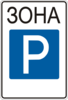
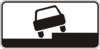
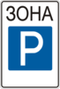
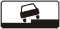
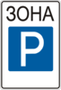
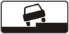

1
2
3
4
5
6
7
8
9
10
11
12
13
14
15
16
17
18
19
20
21
22
23
24
25
26
27
28
29
30
31
32
33
34
15. Остановка и стоянка
15.1.
Остановка и стоянка транспортных средств на дороге должны осуществляться в специально отведенных местах или на обочине.
15.2.
При отсутствии специально отведенных мест или обочины, либо когда остановка или стоянка там невозможны, они разрешаются у правого края проезжей части (как можно правее, чтобы не препятствовать другим участникам дорожного движения).
15.3.
В населенных пунктах остановка и стоянка транспортных средств разрешаются на левой стороне дороги, имеющей по одной полосе для движения в каждом направлении (без трамвайных путей посередине) и не разделена разметкой
 1.1
(см. приложение 2), а также на левой стороне дороги с односторонним движением.
1.1
(см. приложение 2), а также на левой стороне дороги с односторонним движением.
1.1
(см. приложение 2), а также на левой стороне дороги с односторонним движением.
Если дорога имеет бульвар или разделительную полосу, остановка и стоянка транспортных средств возле них запрещаются.
15.4.
Транспортные средства не разрешается ставить на проезжей части в два и более ряда. Велосипеды, мопеды и мотоциклы без бокового прицепа разрешается ставить на проезжей части не более чем в два ряда.
15.5.
Ставить транспортные средства под углом к краю проезжей части разрешается в местах, где это не будет препятствовать движению других транспортных средств.
У тротуаров или иных мест с пешеходным движением ставить транспортные средства под углом разрешается только передней частью, а на подъемах – только задней частью.
15.6.
Стоянка всех транспортных средств в местах, обозначенных дорожными знаками
 5.38,

5.39,
установленными с табличкой
7.6.1,
разрешается на проезжей части вдоль тротуара, а установленными с одной из табличек

7.6.2-7.6.5
(см. приложение 1) – легковых автомобилей и мотоциклов только так, как показано на табличке.
5.38,

5.39,
установленными с табличкой
7.6.1,
разрешается на проезжей части вдоль тротуара, а установленными с одной из табличек

7.6.2-7.6.5
(см. приложение 1) – легковых автомобилей и мотоциклов только так, как показано на табличке.
5.38,

5.39,
установленными с табличкой
7.6.1,
разрешается на проезжей части вдоль тротуара, а установленными с одной из табличек

7.6.2-7.6.5
(см. приложение 1) – легковых автомобилей и мотоциклов только так, как показано на табличке.
15.7.
На спусках и подъемах, где способ постановки не регламентируется средствами регулирования движения, транспортные средства необходимо ставить под углом к краю проезжей части так, чтобы не создавать препятствий другим участникам дорожного движения и исключить возможность для самопроизвольного движения этих средств.
На таких участках допускается ставить транспортное средство вдоль края проезжей части, повернув управляемые колеса таким образом, чтобы исключалась возможность самопроизвольного движения транспортного средства.
15.8.
На трамвайных путях попутного направления, расположенных слева на одном уровне с проезжей частью для движения нерельсовых транспортных средств, разрешается остановка только для выполнения требований данных Правил, а на расположенных возле правого края проезжей части – только для посадки (высадки) пассажиров или выполнения требований данных Правил.
В этих случаях не должны создаваться препятствия для движения трамваев.
15.9.
Остановка запрещается:
- а) на железнодорожных переездах;
- б) на трамвайных путях (кроме случаев, оговоренных пунктом 15.8 данных Правил);
- в) на эстакадах, мостах, путепроводах и под ними, а также в туннелях;
- г) на пешеходных переходах и ближе 10 м от них с обеих сторон, кроме случаев предоставления преимущества в движении;
- ґ) на перекрестках и ближе 10 м от края пересекаемой проезжей части при отсутствии на них пешеходного перехода, за исключением остановки для предоставления преимущества в движении и остановки напротив бокового проезда на Т-образных перекрестках, где имеется сплошная линия разметки или разделительная полоса;
- д) в местах, где расстояние между сплошной линией разметки, разделительной полосой или противоположным краем проезжей части и остановившимся транспортным средством менее 3 м;
- е) ближе 30 м от посадочных площадок для остановки маршрутных транспортных средств, а если их нет – ближе 30 м от дорожного знака такой остановки с обеих сторон;
- є) ближе 10 м от обозначенного места выполнения дорожных работ и в зоне их выполнения, где это создаст препятствия работающим технологическим транспортным средствам;
- ж) в местах, где будет невозможен встречный разъезд или объезд остановившегося транспортного средства;
- з) в местах, где транспортное средство закрывает от других водителей сигналы светофора или дорожные знаки;
- и) ближе 10 м от выездов с прилегающих территорий и непосредственно в месте выезда.
15.10.
Стоянка запрещается:
- а) в местах, где запрещена остановка;
- б) на тротуарах (кроме мест, обозначенных соответствующими дорожными знаками, установленными с табличками);
- в) на тротуарах, за исключением легковых автомобилей и мотоциклов, которые могут быть поставлены на краю тротуаров, где для движения пешеходов остается по меньшей мере 2 м;
- г) ближе 50 м от железнодорожных переездов;
- ґ) вне населенных пунктов в зоне опасных поворотов и выпуклых переломов продольного профиля дороги с видимостью или обзорностью менее 100 м хотя бы в одном направлении движения;
- д) в местах, где стоящее транспортное средство сделает невозможным движение других транспортных средств или создаст препятствие для движения пешеходов;
- е) ближе 5 м от контейнерных площадок и(или) контейнеров для сбора бытовых отходов, место размещения или обустройство которых отвечает требованиям законодательства;
- є) на газонах.
15.11.
В темное время суток и в условиях недостаточной видимости стоянка вне населенных пунктов разрешается только на площадках для стоянки или за пределами дороги.
15.12.
Водитель не должен оставлять транспортное средство, не приняв всех мер, чтобы не допустить его самопроизвольного движения, проникновения в него и(или) незаконного завладения им.
15.13.
Запрещается открывать двери транспортного средства, оставлять их открытыми и выходить из транспортного средства, если это угрожает безопасности и создает препятствия другим участникам дорожного движения.
15.14.
В случае вынужденной остановки в месте, где остановка запрещена, водитель должен принять все меры, чтобы убрать транспортное средство, а при невозможности это сделать – действовать в соответствии с требованиями пунктов
9.9
-
9.11
данных Правил.
15.15.
На проезжей части запрещается установка предметов, мешающих проезду или паркованию транспортных средств, за исключением случаев:
- оформления дорожно-транспортного происшествия;
- выполнения дорожных работ или работ, при которых используется проезжая часть;
- ограничения или запрещения движения транспортных средств и пешеходов в случаях, предусмотренных законодательством.